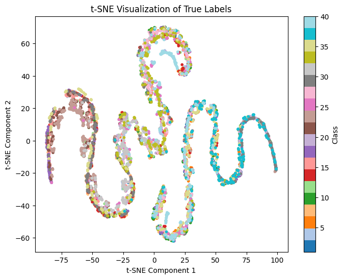
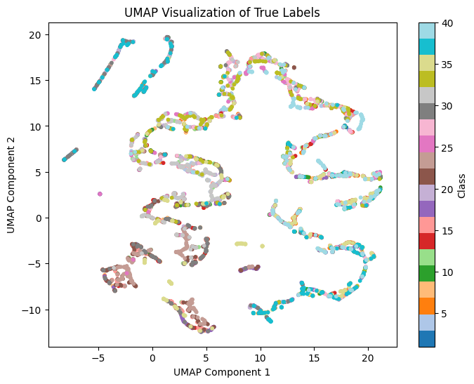
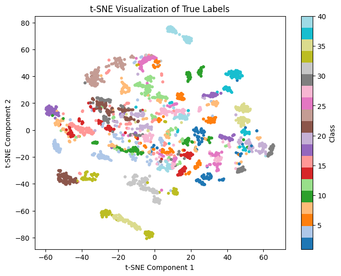
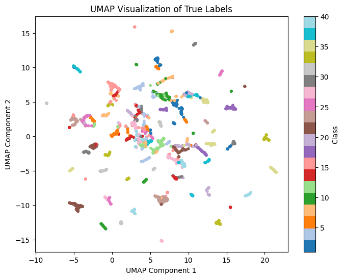

Licensed Chemical Engineer | MEng in Artificial Intelligence
I am a licensed chemical engineer currently taking a Master of Engineering in Artificial Intelligence at
the University of the Philippines Diliman.
About
I started out in chemical engineering, graduating cum laude from Mindanao State University - Iligan
Institute of Technology in 2023 and becoming a licensed chemical engineer in 2024. My thesis on polymer
synthesis optimization was awarded College Best Thesis in Sustainability.
After graduating, I worked as a cadet engineer at Coco Corporation, where I monitored biodiesel
production through a Distributed Control System. Working with real-time plant data got me interested in
what could be done with it, which led me to machine learning.
I am now taking a Master of Engineering in Artificial Intelligence at the University of the Philippines
Diliman. My work so far focuses on classical machine learning, feature engineering, and building models
that are lightweight and interpretable.
Projects

t-SNE (Raw)

UMAP (Raw)

t-SNE (Top-N)

UMAP (Top-N)
t-SNE and UMAP embedding spaces before (raw) and after Top-N feature selection.
Philippine Medicinal Plant Leaf Classification
Python | OpenCV | scikit-learn | UMAP
A classical machine learning pipeline that classifies 4,922 leaf images across 40 Philippine
medicinal plant species. I extracted a 371-feature vector per image (color, texture, shape, and vein
descriptors), selected the top 200 features using ANOVA F-scores, and tuned an RBF SVM with grid
search.
Result: 98.06% test accuracy, beating the published VGG19 CNN benchmark of 92.67%
and landing within 0.33 points of a VGG19 + SVM baseline, with a much lighter model.
Operated and monitored biodiesel production through a Distributed Control System (DCS), tracking
real-time deviations across multiple unit operations and coordinating with field operators to
hold process targets.
Built and maintained a centralized file system for equipment specifications, technical drawings,
and historical plant data, improving traceability across engineering teams.
Completed cadet training in plant operations, maintenance, and analytical laboratory work; ran
safety checks and start-up procedures under strict quality controls.
Skills
Languages: Python, SQL, JavaScript, MATLAB
Data Science: Machine Learning, Feature Engineering, Exploratory Data Analysis